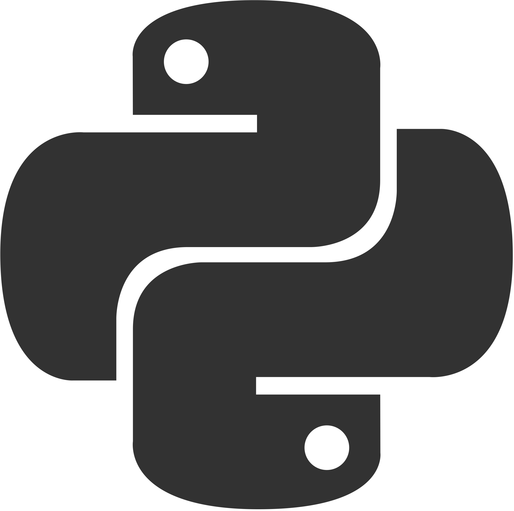
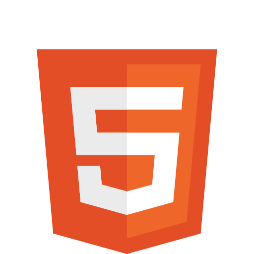
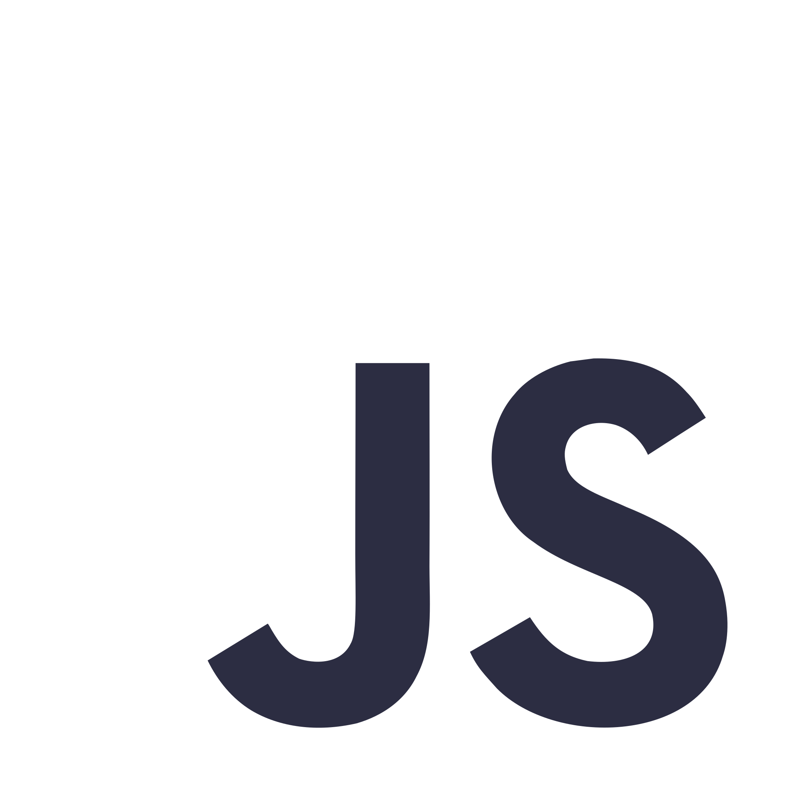

About Me
My name is Alyssa and I'm a first-year at the University of Waterloo. I decided to pursue a tech career because of its prevalence in our day to day lives and, as a result, its capability for social good. Seeing my potential to succeed in the field because of my skillset, I chose Software Engineering at the University of Waterloo to have a diverse background of relevant work and learning experiences when I graduate, and to be alongside individuals that push me to do my best.
Outside of school, I like spending my time with the arts, creating. I love playing the guitar and piano, painting, and making digital art when I have the time.
Technical Skills










